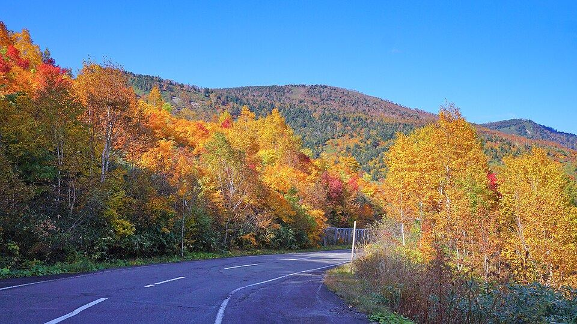
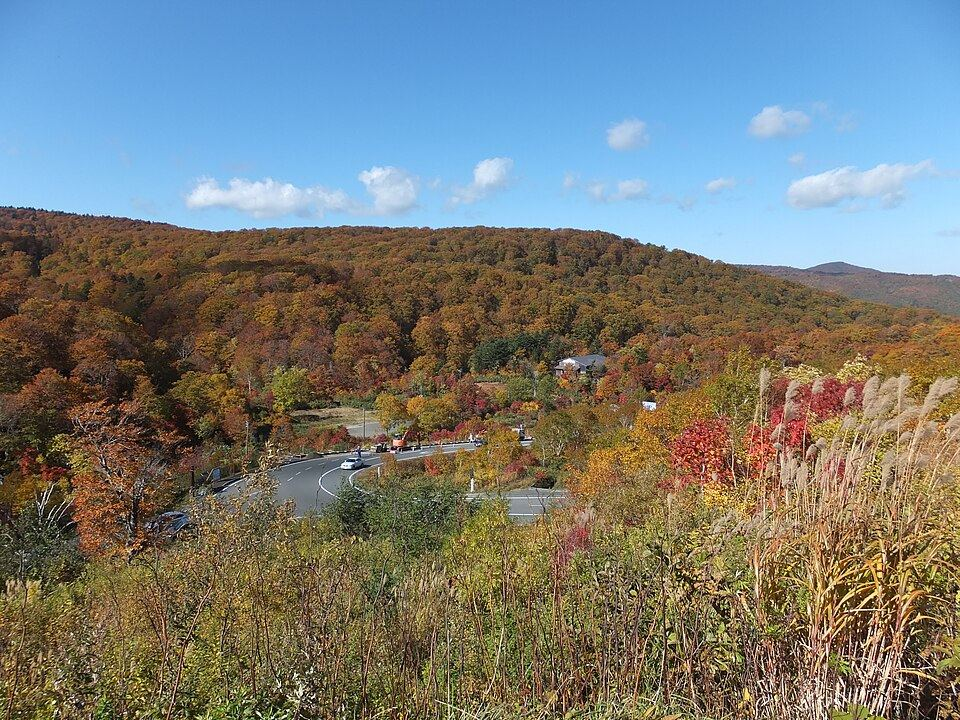
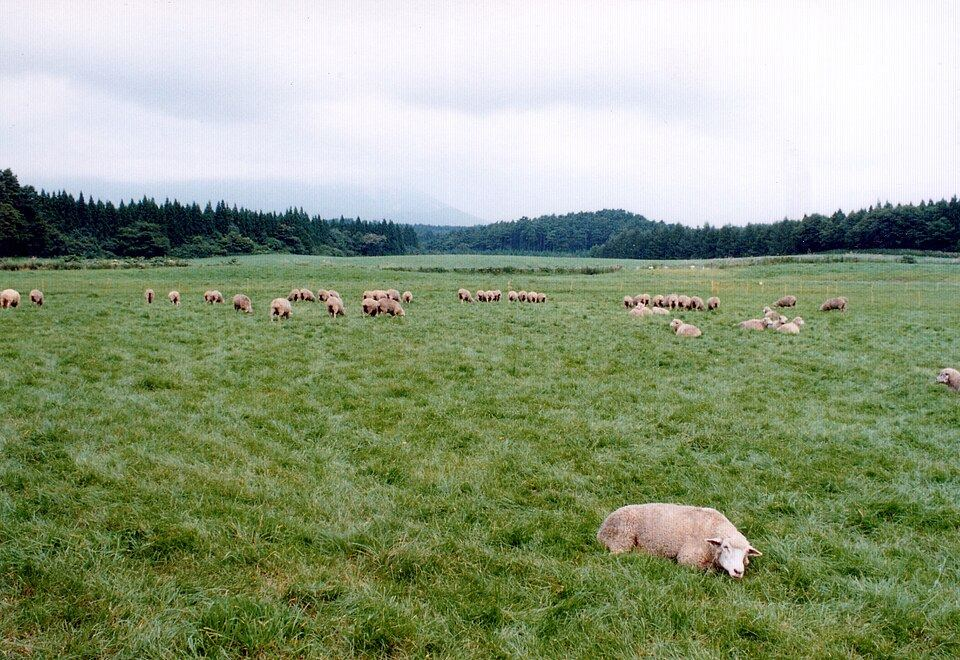

母さんと 岩手の秋へ

母さんと佑樹のふたり旅。2日目は宮古で達也と合流。
- 日数
- 2日1泊2日
- 1日目
- 3案母さんが選ぶ
- 紅葉
- 見頃10月中旬
下にスクロールで1日目 → 2日目
1日目は母さんが選ぶ
盛岡で車を借りて、夕方までに普代の宿へ。その途中でどこを通るかを3つ用意しました。押すと下の2日目の書き方も変わります。どれでも宿には間に合います。
八幡平の紅葉を抜ける

10月中旬は八幡平アスピーテラインの紅葉がちょうど見頃。標高1,600mの道を車で登って、山の上から紅葉を見おろします。歩かなくても車から絶景。
- 1八幡平アスピーテライン盛岡から約1時間半。峠の駐車場まで車で行ける
- 2鏡沼駐車場から歩いて15分の火口湖。無理なら車窓だけでも十分
- 3安比高原帰り道。牛のいる牧場と白樺の林
龍泉洞と200mの断崖

日本三大鍾乳洞の龍泉洞は、底まで見えるほど透明な地底湖が奥にあります。そのあと高さ200mの断崖がつづく北山崎へ。岩手の地面の中と、海の際を1日で。
- 1龍泉洞盛岡から約2時間。8:30〜17:00・大人1,100円。中は年中10度なので上着を
- 2北山崎第一展望台は駐車場から平らな道ですぐ。第二・第三は階段
- 3黒崎北緯40度のシンボル塔と白い灯台。宿から車10分
小岩井農場でゆっくり出る

朝は急がず、岩手山を正面に見る牧場でソフトクリーム。午後にゆっくり移動して、明るいうちに宿へ。いちばん疲れない案です。
- 1小岩井農場 まきば園盛岡から30分。羊と馬と、岩手山の見える芝生
- 2盛岡の街を少し石割桜と岩手銀行赤レンガ館。歩いて回れる距離
- 3夕方の黒崎明るいうちに宿へ。北緯40度の塔と灯台は宿から車10分
普代B邸にチェックイン

ADDressの家。商店街の近くの一軒家で、部屋は201。夕飯は歩いて9分の「お食事処いち龍」、お風呂は車12分の「くろさき荘」で日帰り入浴ができます。
- 1チェックイン14:00〜21:00（チェックアウトは翌10:00）
- 2住所〒028-8331 岩手県下閉伊郡普代村宇留部6-8
- 3家守藤本健司さん。近くに住宅があるので夜は静かに
- 4買い出しマルコシ商店（徒歩10分）で朝ごはんを
7時半に普代を出る

達也が待っているので、朝は早めに。チェックアウトは10時までですが、それより早く出て大丈夫です。宮古までは三陸沿岸道路で約1時間。
- 17:00 朝ごはん前の日にマルコシ商店で買っておいたもので軽く
- 2普代水門出がけに車で5分。村を津波から守った15.5mの水門
- 37:30 出発宮古まで約1時間。北山崎はこの道の途中にあります
宮古で達也と浄土ヶ浜へ

白い岩と緑の松と、透きとおった青。達也の地元なので、案内はまかせましょう。遊覧船に乗ると、陸からは見えない断崖と洞が海の側から見られます。
- 19:30 合流浄土ヶ浜ビジターセンターの駐車場で待ち合わせが分かりやすい
- 2遊覧船 宮古うみねこ丸9:00〜16:30。湾内周遊は大人1,800円、30分。10月の火曜は運休（17日は土曜なので運航）
- 3駐車場4〜10月は園地内が車両規制。第1駐車場に停めて歩くかシャトルバス（土日祝運行）
瓶ドンを3人で食べる

牛乳瓶に生うにを詰めた宮古の名物。魚菜市場は朝6時半から開いていて、市場の中で海鮮丼も食べられます。達也のおすすめを聞くのがいちばん確実。
- 1宮古市魚菜市場6:30〜17:30・水曜休み。17日は土曜なので開いています
- 2瓶ドン牛乳瓶に入った生うに。ごはんに自分であける宮古だけの食べ方
- 3おみやげ市場で干物や海産物。保冷剤をもらっておく
盛岡へ戻って新幹線に乗る

宮古から盛岡までは横断道路で約1時間半。信号がほとんど無い道です。19時までに車を返して、新幹線の時間まで駅で少し。
- 115:30ごろ 宮古を出る盛岡着は17時ごろ。余裕を見て早めに
- 2車の返却19時まで。ガソリンは満タンにして返す
- 3駅で冷麺ぴょんぴょん舎 盛岡駅前店は駅から徒歩3分。時間がなければ駅ビルで
車は軽でじゅうぶん
10/16の朝から10/17の夕方まで（2日分）で、実際に予約画面まで進めて出した金額です。安い順。
- ガッツレンタカー 盛岡下太田店¥6,380／EKワゴン等の4ドア軽。この日程で最安。盛岡駅から車15分（バス盛南ループ200「榊」下車すぐ）。9:30〜18:30・日曜休み。ワゴンRやタントなら¥7,700予約 →
- ニコニコレンタカー 盛岡駅西通店¥7,260（アプリ料金）／¥9,020（そのまま予約）。N-BOX・タント等。盛岡駅西口から徒歩8分。9:00〜19:00予約 →
- 日産レンタカー 盛岡駅前（無人ステーション）¥10,000／ハスラー・N-BOX等。北口から徒歩5分でいちばん近い。受け取りは無人式予約 →
どれも免責補償（1日1,100円くらい）は別。走行距離は1日300kmまでで、今回はどの案でも足ります。ガッツは駅から離れているぶん安いので、行きはタクシー（15分）で向かうつもりです。予約は佑樹がやるので、母さんは見るだけで大丈夫。
持ちもの
- 上着山も海も10月は冷える。1枚多めに
- 歩きやすい靴展望台と洞内の階段
- 日帰り入浴セットくろさき荘。タオルは持参
- 新幹線の予約母さん。トクだ値スペシャル28は9/28まで
- 免許証運転する人
- 酔い止め山道のカーブと、遊覧船に乗るなら
- 保冷バッグ市場でおみやげを買うなら
- 母さん1日目の案を選ぶ／新幹線の予約
- 佑樹宿とレンタカーの予約／運転
- 達也17日 朝から宮古で合流
それでは 10月16日に
1日目の案が決まったら、佑樹にLINEで教えてください。あとで変えても大丈夫です。
写真: Wikimedia Commons（各撮影者・CC BY / CC BY-SA）とADDress公式ページより。料金・営業時間は2026年9月時点の各公式サイトとじゃらんレンタカーの実勢。